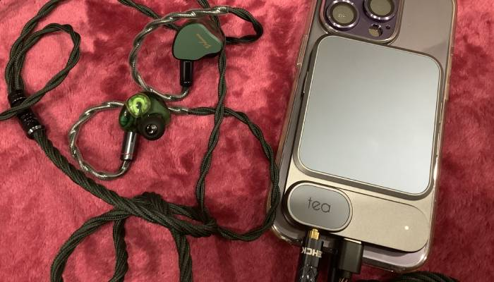
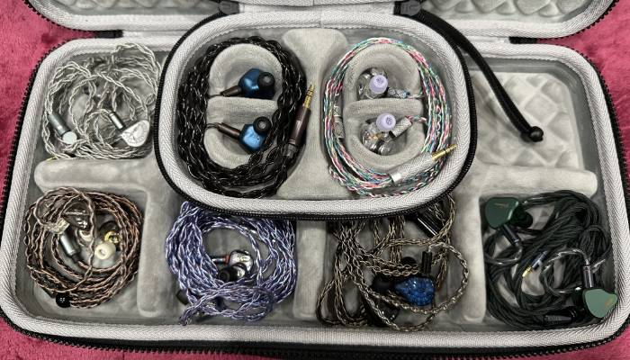

2024-07-01

와
학생때는 진짜 음악 엄청 들었었는데.
그때 좋다던 이어폰, 플레이어등 왠만한건 다 써본거같다.
무선이 편하긴한데, 항상 부족한 느낌이 들었던게,
유선이 좋아서구나?
그런데 최근에 우연하게 유선 이어폰들, 특이 차이파이로 유명한것들
이건 진짜 좋은듯?? 이것 저것 들어보는 중인데
이어폰마다 약간씩 특징이 달라서 재미있음.이것도 쓰다보면 뭐 가장 손이가는놈이 생기겠지.
한참 만지작거리던 블투 헤드폰도 소니 wh-1000xm5, 슈어 aonic 50 gen 2 이거만 남음.
DAC,DAP, 등은 이것저것 보는 중인데 이건 다음에 써보겠다.
